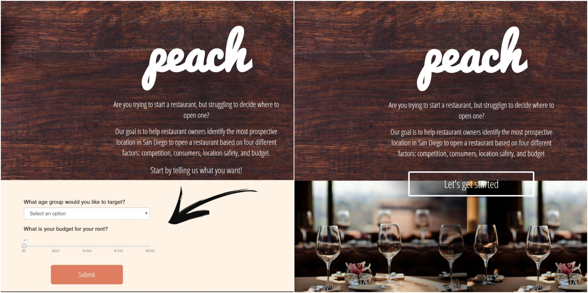

A data visualization website created to help restaurants entrepreneurs find prospective locations to open up business in San Diego county.
Starting a restaurant involves a lot of research. Researching takes time. Time is money. To expedite part of the research segment for restaurant entrepreneurs, we have designed Peach by combining DELPHI databases with interactive visualizations.
Within the food retail industry, competition is high. Entrepreneurs must rely on research and competitive analysis to make business decisions. However, this sort of information is not readily available. Our ultimate goal is to help restaurants owners identify the best location in San Diego to open a restaurant.
Question: Where in San Diego should I open up a restaurant?
From the paper prototypes, we learned that it was not intuitive what our result page was showing, or how users could interact with the map, or how the box was related to the user’s inputs. To fix that, in our low fidelity mockup, we decided to include an overview section which would list the results we found in DELPHI datasets. We also needed to include descriptions for each of the result explaining what this data was about. In addition, we decided to add a pie chart for demographics and a bar graph for any additional dataset.
The most challenging design problem that we faced during the process was the display of our landing page. We believed a landing page was crucial to our app in order to convey to users the purpose of our app and give them an impressive first impression. Since the data that we show depended on our user’s preferences, we needed a way to ask our users what they prefer before they enter the result/data visualization page. We had two ideas: a pop-up modal that shows up when you click the “Let’s get started” button, and a form that is integrated as part of the landing page.
To decide which version was a better design, we not only conducted A/B testing to find out what users like, but also asked feedback from our peers in class. Some feedback that we got regarding the pop-up modal were that it would keep the landing page more clean and simple, redirect users’ full attention to the form, and make the process less confusing. However, some people liked having the form displayed on the page because there would be less clicks to accomplish the same task, and it would be more convenient for users to see and explore the page. In terms of aesthetics, people thought a pop-up modal was more appealing. At the end, because of some restrictions from the DELPHI datasets, we only needed to ask two questions from the users so we decided to put the questions on the landing page. The current design has introduction at the top to explain the purpose of our app. Then, it is followed by the questions so when the users reach there, they will have enough information to understand why those questions were necessary for the purpose of our app.